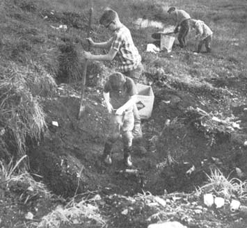
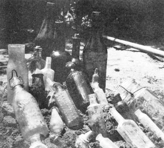
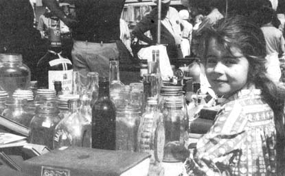
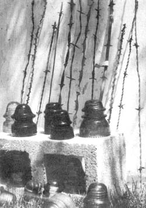

A few years ago my teen-age son, David, became interested in antique bottles when the highway department dug through an area used as a dump by the settlers of a nearby city. Collectors who learned of the discovery turned out in droves and that field was churned and sifted and dug through until it looked like a battleground. Glassware came from the dirt in every variety and color. There were drugstore jars with names and emblems forming a raised design . . . graceful wine bottles and tiny opium vials . . . "punkinseed" whiskey flasks and odd-shaped food and cosmetic containers. All were old and, when David pointed out that all were valuable to collectors, our whole family became interested.
Soon afterward, my parents bought an old home in the Oregon Cascades. When we helped them rototill the back yard for a garden, every churned-up furrow brought to light bits of glass, old bottles and even little porcelain dolls. We checked and, sure enough, collectors again were more than willing to buy our finds.
The fascination in collecting anything old seems to grow stronger and appeal to more people every year, all across the country. You can profit, even establish a homestead business, by finding these buried riches and selling them to the folks who want them.
You don't have to live on an old homestead to take part in this treasure hunt either, as long as you can get permission to explore and dig on private property. When you're biking or hiking, watch for signs of old homesteads, lumber camps, mining towns, railroad stations . . . any place where people gathered and left trash behind. All are potential treasure troves.
Coins and watches sometimes slipped through wooden sidewalks and floors. Children played with silver spoons and left them buried. Banks were few and unreliable, so many people hid their savings . . . then sometimes forgot or were unable to return for the cache. And everywhere, empty bottles were tossed aside . . . where they still wait for you to find them.
Go over these sites with a sharp eye. Watch for bottles, glass insulators, iron toys, buttons, stamps, license plates, old checks, spoons, campaign buttons, even barbed wire. Anything old will attract a buyer.
Early homesteaders usually had no central dump. They tossed their bottles and other trash under the house, into streams, along fences, down ravines or into the outhouse.
A metal detector is helpful, but not essential, for locating such refuse today. Just imagine yourself in the shoes of the original settler and look for the most likely dump site. Some trash may still be above ground so watch for broken crockery, amethyst-colored glass and rusting tin cans with soldered-instead of modern rolledseams.
A few bottle hunters use long metal rods to locate buried items but you should go easy if you try such a probe. Old glass breaks with little effort and it's a heart-sinking feeling to find you've knocked a chunk from a valuable bottle.
When you discover a dump, it's best to use a hand trowel-or even a table knife-to safely loosen the bottles you find from the packed soil. Take along a box and plenty of newspapers to wrap around the glassware you unearth.
Remember, too, to be absolutely sure to get permission before treasure hunting on any land, occupied or not. Then check attics and basements, door and window frames, under the main building, barn and outhouse . . . and find that dump!
The value of old bottles and jars depends on condition and scarcity. Containers common on one coast will often be rare on the other. Favorites that bring the highest prices from collectors are historical flasks, bitters, whiskey and poison bottles. More common and less valuable are medicine, condiment and cosmetic containers, Mason jars and ink wells. A Jim Beam centennial whiskey bottle, for instance, can sell for $60 or more while drugstore bottles-which may bring as little as 50 cents-seem to average from $3 to $10.
MOLD SEAM LINES: On newer, machine-made glassware, the seam line runs all the way to the top. On older bottles, the lip was applied after the container was removed from the mold and the seam stops at the lip.
PONTIL MARKS: Many hand-blown bottles will have a small, jagged spot on the bottom. These were caused by a steel rod called a pontil which was used to remove the container from the blowpipe, then broken away.
COLOR: Sunlight turns old glass a beautiful amethyst, adding to its value. Minerals in the ground may cause rainbow coloring called opalization. This can be beautiful, but may detract from the value and is nearly impossible to remove.
IMPERFECTIONS: Old glass often shows bubbles, crooked necks, uneven thickness of bottoms or neck edges and so on. Value increases with the number of imperfections.
RAISED LETTERING AND DESIGNS: These increase the value and the appeal of old bottles.
Telephone and telegraph wires have been strung from glass insulators-to prevent current leakage-almost from the time the wires were invented (telegraph insulators date back to 1844 or 1845, and telephone insulators to 1876).
Like bottles, glass insulators come in a variety of colors and shapes. You may find them in blue, deep green, or aqua-green glass, sun-colored amethyst, white milk glass and-if you're lucky-even in carnival or cranberry glass.
The bell-shaped glasses were molded in a variety of sizes and shapes. Some have inner "skirts", while others have just the outer bell. Some feature sharp or rounded drop-points on the bottom-meant to cause moisture to drip to the ground instead of seeping inside the glass-and others have smooth bottoms.
The value of insulators-like bottles-depends on age, scarcity, color and beauty. Values range from $2 or $3 for the more common insulators to the rare types that bring $25, $35 or more.
You're not likely to find these insulators in dumps because they were usually dropped along the lines when they were replaced. In many cases, the entire wire was abandoned and the insulators are still on the old unused lines along poles or buildings.
Joseph Glidden, an Illinois settler, first saw the need for lightweight fencing and-with his wife's help-used a farm kitchen coffee mill to fasten bits of twisted metal to a long strand of wire.
The use of barbed wire then grew rapidly and the fencing played a bloody role in the cattleman-farmer range wars which raged throughout the late 1800's. Today, the history and many variations of the fencing fascinate collectors who buy 18-inch "sticks" of the old wire.
Over 800 different patents of barbed wire have been recorded. There are variations in the twist, the barb, the way of attaching the barb, the number of barbs per foot and so on. Some wires look like rick-rack. Others have points soldered on. There are round barbs with jagged edges and barbs that are twisted around the main strand.
Barbed wire variations seem endless and collectors are eager to add to the specimens they own. Sticks of the more common patterns sell for 50 cents each, while rare varieties bring as much as $100.
Barbed Wire Collector's Associations have been formed in at least nine states. Membership runs into the hundreds, with regularly scheduled exhibitions and swapping meets.
Hundreds of junk and antique dealers across the country handle bottles and other collectables. You'll find them listed in phone books under ANTIQUES - DEALERS. Keep in mind, though, that-while dealers buy more at a time-private collectors will pay more for individual items.
You can reach those private collectors with newspaper ads and garage sales of your antiques. Flea markets-where you can usually rent a table for about $5-are excellent places to sell your treasures.
A number of antique collectors' magazines carry ads for people who wish to buy or sell a multitude of items. One of the most helpful is SPINNING WHEEL, a publication which carries monthly lists of flea markets and antique shows scheduled across the country . . . as well as a selection of antique dealers, their addresses and their areas of interest.
SPINNING WHEEL also contains an extensive "Antiques Shopping Center" for both buyers and sellers. The May '72 Buying Column Ads placed by individual collectors and dealers included such wanted items as old political documents, military medals, mechanical banks, old books, unusual fruit jars, campaign buttons, glass paperweights, old coins, railroad items, insulators, Coca-Cola trays and old beer cans.
If your library doesn't carry the magazine, you can order a single copy, postpaid, for 75 cents from SPINNING WHEEL, Exchange Place, Hanover, Pa. 17331.
Your library may have a copy of A.T. Evans' TREASURE HUNTER'S YEARBOOK. In addition to treasure hunt stories and hints, each copy of this annual carries a bottle club directory and the 1970-71 issue lists names and addresses of 96 bottle clubs located in nearly every state including Hawaii. Another section in the Evans annual lists names and addresses (and, sometimes, meeting places and times) for 30 treasure clubs. The yearbook is available for $4 from Eureka Press, P.O. Box 1215, Odessa, Texas 79760.
Scenic checks, so popular with banks today, have spawned a new group of collectors. If your hunting turns up any old checks, you can learn their value by contacting the Check Collectors Round Table, P.O. Box 27112, Cincinnati, Ohio 45227.
When I first read this piece I thought it was a nice little idea but that no one could really expect to make more than pin money dealing in old bottles. Then I remembered a genial young con man who-when I met him a couple years back-was making almost his entire living with these collectables.
What this guy had done, see, was move into a tumbledown garage in a little town in upstate New York. And that garage-which had closed as a business probably 30 or 40 years before-had a back room stacked full of canisters and jugs and vials and jars and bottles of ancient polish, wax, liniment, carb cleaner and Lord knows what all. About once every two months our hero put three or four bushel baskets of his booty in the trunk of his car, drove to Dayton, Ohio to visit his folks . . . and unloaded the old glassware for enough to cover living expenses until the next trip.
And where did the "con man" part come in? Well, as I recall, the young man in question seemed to grease his sales by visiting a different antique shop on every journey . . . and then sort of letting on to the owner that he had spent years collecting the bottles in question and that there weren't really any more where they had come from. I can't say that I endorse this mild deception, though . . . and, the way old bottles are selling nowadays, it isn't necessary anyway.-J.S.
|
 |
 |
 |
|
 |
|
|